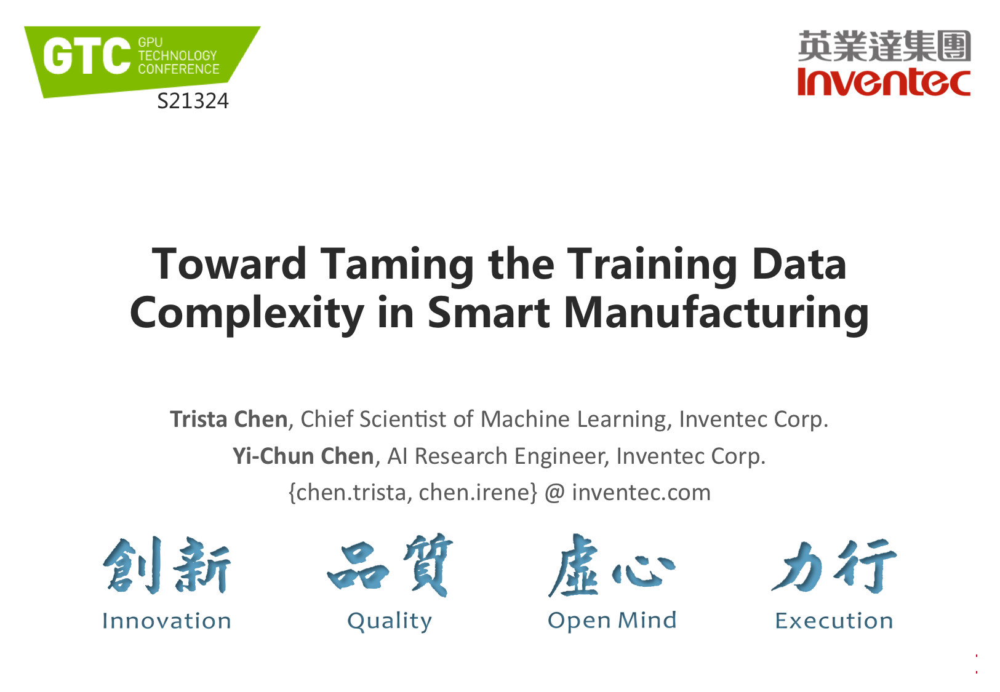
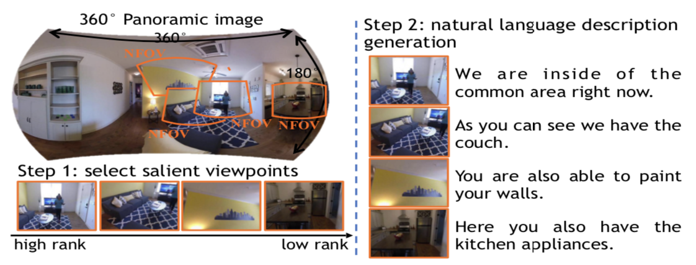
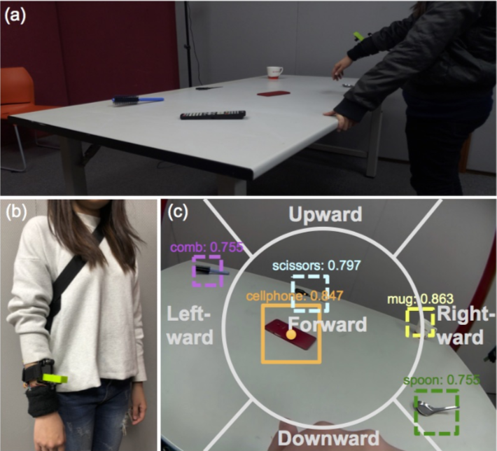

About
I am an incoming student of MSCV (Computer Vision) program at Carnegie Mellon University.
Currently I am working with Prof.
Kris Kitani.
Previously at Inventec Corporation, I was an AI Research Engineer working with Dr.
Wei-Chao Chen and Dr.
Trista Chen.
Before that, I have developed visual search solutions for smart eCommerce at Viscovery.
My research interests include deep learning and computer vision, especially anomaly detection, image segmentation and object detection and their applications to smart manufacturing.
Also I am fortuante to have worked with Prof.
Min Sun.
I received my B.S. from National Tsing-Hua University. I am actively looking for 2021 Summer Internship to explore more computer vision applications in the industry.
Carnegie Mellon University
M.S. in Computer Vision
Start in 2021 Spring
Inventec Corporation
AI Research Engineer
2019.01-Present
Viscovery
Computer Vision Engineer
2018.04-2018.12

NTHU
B.S. in PME
2013.09-2017.06
Invited Talk

NVIDIA GTC 2020
Toward Taming the Training Data Complexity in Smart Manufacturing
Toward Taming the Training Data Complexity in Smart Manufacturing
Publications


DLWV2: a Deep Learning-based Wearable Vision-system with
Vibrotactile-feedback for Visually Impaired People to Reach Objects
Vibrotactile-feedback for Visually Impaired People to Reach Objects
iROS 2018
Self-view Grounding Given a Narrated 360° Video
AAAI 2018
ICCV17: CLVL workshop
Projects
TBD